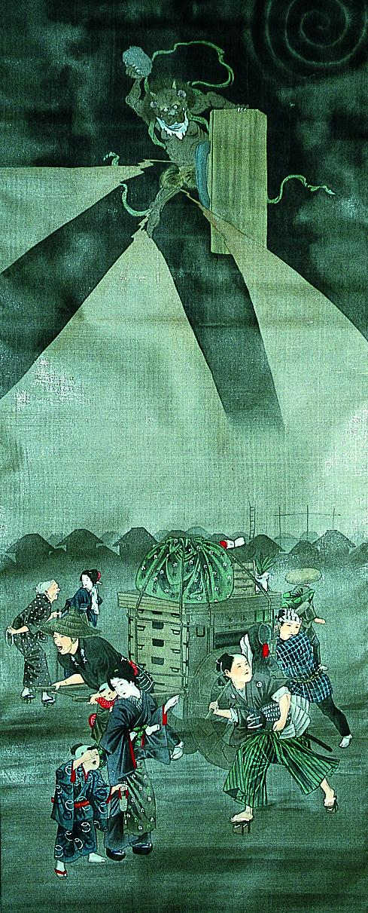

黒雲に浮かび、火打石と火打金を打って雷を発生させる雷神。鬼のように角があり、緑色の羽衣と虎皮の腰巻を身につけている。
出典：親書誌：A5_pushkin_0061：（雷神図；ライジンズ）／日付：2011／資源識別子：A5_pushkin_0061_0001_0000
Copyright (c)2010- International Research Center for Japanese Studies, Kyoto, Japan. All rights reserved.